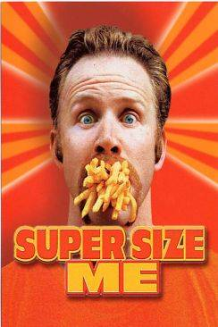

Documentaires Disponibles

Le fast-food est partout. 37% des adolescents américains ont un problème de poids. Deux adultes sur trois sont atteints de surcharge pondérale ou d'obésité. Comment l'Amérique est devenue aussi grosse? Pour mener son enquête, Morgan Spurlock a traversé les Etats-Unis et interrogé des spécialistes dans plus de vingt villes. Mais le fil rouge du documentaire est une expérience que Morgan Spurlock décide de mener sur lui-même. Sous la surveillance attentive de trois médecins, le voilà donc au régime MacMuffin, Big Mac, Royal Cheese, frites et coca.
Réalisateur(s) : Morgan Spurlock
Acteur(s) : Morgan Spurlock; Alexandra Jamieson; Stephen Siegel
Genre : Film; Documentaire
Durée : 1h 40min (100min)
14 Avril 1912, le Titanic sombre dans les eaux glacées de l'Atlantique Nord. Mais au-delà du célèbre naufrage, il est une aventure plus méconnue, et pourtant tout aussi incroyable que son destin légendaire: sa construction. 110 ans après la tragédie, ce documentaire revient sur la genèse du plus mythique paquebot de tous les temps. Jamais un tel navire n'avait été imaginé, aussi grand et luxueux.
Réalisateur(s) : Nicolas Breneol
Genre : Film; Documentaire
Durée : 1h (60min)